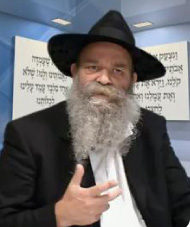

myself.
There is no point in measuring ourselves up to the Rebbe in his manner of avoda. The Rebbe asks that we do according to our abilities and strength. That means he doesn’t expect me to do as he does; he expects me to do as myself.

Rabbi Meir was a unique person. He was tremendously knowledgeable and an expert in Tanya, in Likkutei Torah, and Torah Ohr. Even as he worked for a living, he completed Shas seven times. I received my entire approach to Chassidus from him. He focused a great deal on the point that Chabad Chassidus demands doing the work yourself.
This was the emphasis in the teachings of Chabad as opposed to the approach of the rest of the students of the Mezritcher Maggid: that the main thing is to do the avoda (spiritual service) on your own. This was also the first message the Rebbe conveyed upon accepting the Chabad leadership in 5711.
However, with all that, the Rebbe is the source of the chayus, strength, motivation and encouragement that every Chassid has. He is the memutza ha’mechaber (connecting intermediary) between me and you, and every one of us, to Hashem. This being so, there is no point in measuring ourselves up to the Rebbe in his manner of avoda. The Rebbe asks that we do according to our abilities and strength. That means, he doesn’t expect me to do as he does; he expects me to do as myself.
There are two kinds of mashpiim. One is the mashpia before whom people shrink and are not able to function independently. The other kind of mashpia enables people to develop and grow. Both types influence others, but in very different ways.
When I hear a sicha from the Rebbe and his demand of me to “Do all that you can,” in my subjective, individualistic way, I hear the Rebbe crying out loudly. What is he crying out? The moment you do your best, you will strengthen me and the work I did all the years; so what is happening with you?
Each of us, every Chassid, needs to be in a position where he can face the Rebbe exposed, without hiding anything, and say: Rebbe, look at my speech and thoughts and see the ratification of your work. Living the Geula. Thinking Geula. We are doing all we can to hasten it.
This is what I heard, in my subjective way. Since then, you can say that I have been working on internalizing this in the story of my life by coming up with activities that draw the hearts of Jews to their Father in Heaven through spreading the wellsprings outward.
This avoda needs to be in a way of mesirus nefesh. What is mesirus nefesh? It means to overcome our habitual way of doing things, going out of that which restrains us, by taking on additional assignments.
Another thing that is required of us is achdus. In the shul that I daven in, in Kfar Chabad, the Chassidim have a wide variety of views. I know that they do their best. They have Chassidic souls and are genuine Chassidim who are all focused on one point. We have to leave the arguing behind. One who is busy hastening the Geula doesn’t have time for machlokes.
The Tzemach Tzedek in his Derech Mitzvosecha writes an astounding thing in the name of the Arizal: Many people seek out other people’s weaknesses and feel compelled to “inform” them and to “correct” them. A person who stops looking for the weaknesses in others doesn’t get excited by them [even if he happens to see them]. A person like this is not “scrutinized” from Above and Hashem does away with his sins. This is measure for measure. For every Jew is part of G-d’s being, a veritable part of G-d above. The moment a Jew sees iniquity in his fellow, he is seeing that very thing in G-d Himself, and that creates “judgment.”
To conclude – it seems to me that our avoda to hasten the Geula needs to be implemented along two lines: spreading the wellsprings outward and in every place, and working hard to make peace between Chassidim, for we are all the sons of one father.
Yair Calev. "myself.." Beis Moshiach, no. 830 (April 2, 2012).